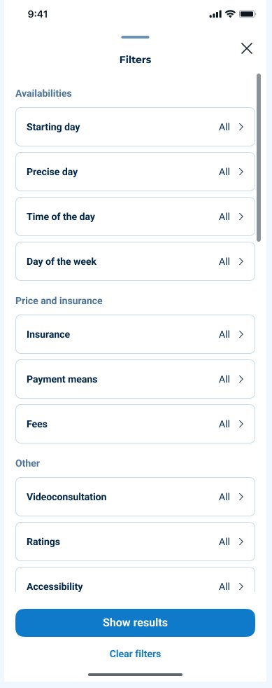

Avant
Vision


J’ai rendu les filtres visibles dans les résultats de recherche, validé ce choix par la data, la recherche utilisateur et des A/B tests, puis conçu l’évolution de tout le système de filtres.
Doctolib — T2 2022 — Desktop, web mobile & app — France & Allemagne
Sur Doctolib, les patients cherchent par spécialité et par ville, puis choisissent un praticien dans une longue liste. Les filtres (disponibilités, honoraires, motif de consultation, langue…) faisaient partie des améliorations les plus demandées par les patients. Ils existaient, mais derrière un unique bouton flottant « Filtrer » en bas des résultats.
Seules 10 % des recherches mobiles en France et 14 % en Allemagne utilisaient un filtre quand il y en avait un. Avant de redessiner quoi que ce soit, l’équipe devait savoir quels filtres comptaient, pour qui, et si de meilleurs filtres aideraient vraiment les patients à réserver.
Avec l’équipe data, nous avons analysé une semaine de recherches mobiles en France et en Allemagne. Trois enseignements ont guidé le design.
Généralistes (18 %), pédiatres (16 %) et ORL (12 %) arrivent en tête, surtout via le filtre de disponibilité : ce sont des besoins urgents. Pour les psychiatres, ce sont les honoraires et le motif.
L’usage passe de 3,6 % à 15 % à mesure que le nombre de résultats augmente. Avec 77 résultats médians en France contre 18 en Italie, l’impact serait plus fort sur les marchés matures.
Les patients qui filtrent réservent plus souvent. C’est une corrélation, pas une preuve, mais c’était suffisant pour prioriser les filtres dans la roadmap.
J’ai mené des tests utilisateurs modérés sur l’app mobile avec quatre patients, dont deux avec une déficience visuelle. Deux missions : modifier un filtre visible, puis en trouver un caché (un dentiste hispanophone).
« L’expérience est très intuitive, surtout la deuxième fois : c’est rapide et efficace. »
Participant au test
« Ça me rappelle les applis de livraison de repas comme Uber Eats. »
Participant au test
La nouvelle barre de filtres a tourné deux semaines sur 100 % du trafic mobile en France et en Allemagne. L’usage des filtres a fortement et significativement augmenté, sur presque tous les types de filtres.
| Filtre | France | Allemagne |
|---|---|---|
| Tous filtres | +55% | +44% |
| Disponibilités | +47% | +54% |
| Motif de consultation | +46% | +7% |
| Langue | +44% | +25% |
| Assurance | — | +44% |
La conversion est restée stable. Les patients filtraient plus sans réserver moins : la nouvelle version a donc été déployée. Elle donnait plus de contrôle aux patients sans rien coûter, et posait les bases de la suite.
La barre de filtres fonctionnait, et son succès a soulevé de nouvelles questions :
Le panneau était devenu un long formulaire mêlant boutons radio, cases à cocher et toggles. Chaque nouveau filtre l’aurait encore allongé. J’ai conçu une structure qui passe à l’échelle.
Le nouveau panneau liste des catégories de filtres, regroupées par thème (disponibilités, prix & assurance, autres). Chacune ouvre un sous-niveau avec le composant le plus adapté : un calendrier pour les dates, un champ de recherche pour les assurances, des cases à cocher pour les choix multiples. Le premier niveau affiche toujours la sélection en cours.

Les notes arrivaient en Italie, il fallait donc pouvoir filtrer par note. J’ai commencé par un benchmark des autres apps : bouton radio, case à cocher ou chip, présélection par défaut, granularité, et filtre ou tri.

Le même modèle a permis d’ajouter facilement des filtres qui répondent à des besoins précis.
Carte, espèces, chèque, et des options propres à chaque pays comme le virement et Satispay en Italie.


Le desktop représente environ 20 % du trafic et partage la même logique. Deux petits changements rendent les filtres sélectionnés plus clairs :